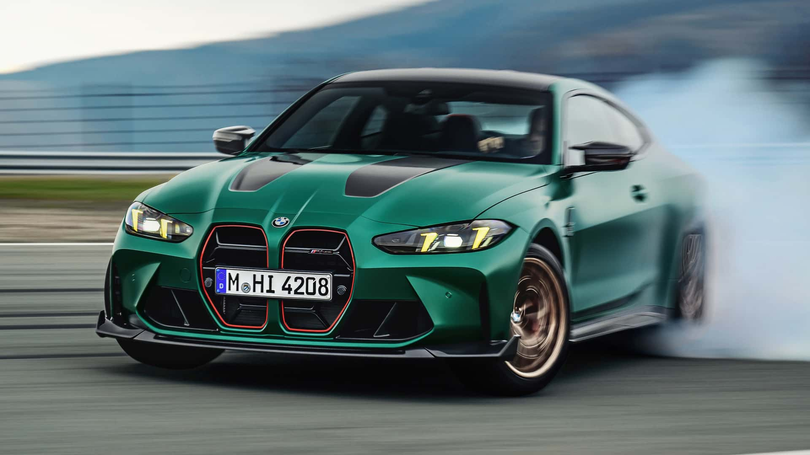

BMW M4 CS 2025
L'héritage moderne de la légende GTS
La BMW M4 CS 2025 incarne l'évolution naturelle de l'ADN performance initié par la M4 GTS. Repoussant encore plus loin les limites technologiques, cette nouvelle génération combine l'héritage racé de sa devancière avec les innovations les plus modernes de BMW M.
Dotée d'un 6 cylindres en ligne biturbo optimisé développant 550 chevaux, la M4 CS bénéficie de l'expertise acquise sur les circuits. La philosophie "track-focused" de la GTS perdure, mais avec un raffinement et une polyvalence accrus pour le quotidien.
Aérodynamique active, matériaux composites avancés et électronique de pointe : la M4 CS 2025 est la preuve que l'excellence sportive sait évoluer sans jamais renier ses origines.